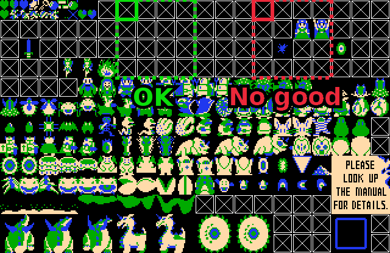
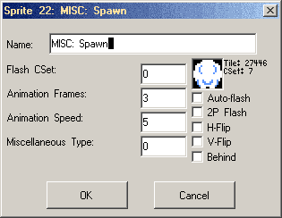
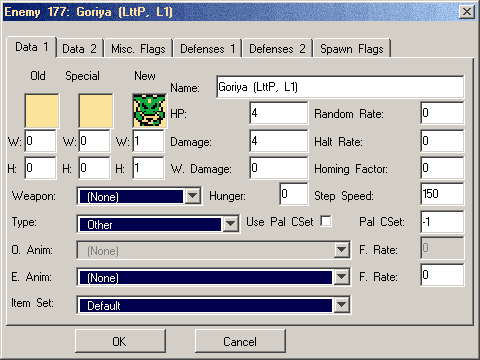
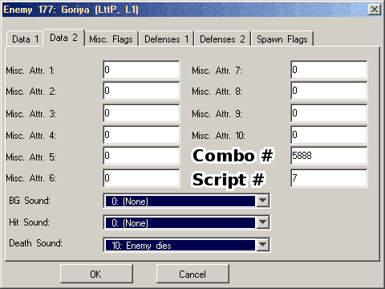
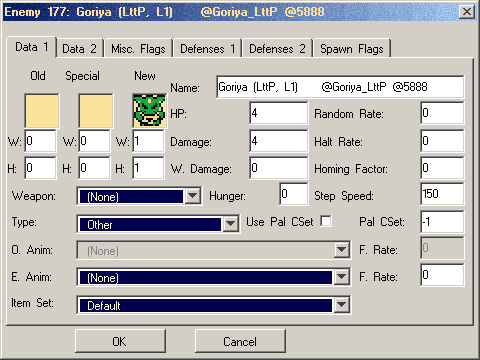

AutoGhost setup
First of all, extract ghost.zh and the ghost_zh folder from the zip file.
- Windows or Linux: These should go in the same folder as ZC itself.
- Mac: Right-click the ZQuest application and select Show Package Contents. The files should go in Contents/Resources. To be sure you're in the right place, look for std.zh and string.zh.
If you want to use ghost.zh in multiple quests with different settings, you can make copies of the file with a different filename or in a different folder. You only need to copy the file ghost.zh itself.
General setup
This part only needs done once per quest.
Blank tiles and combo
First, you'll need to set aside a 4x4 block of tiles to leave blank.

Set up a combo that uses the top-left tile of that block and has its type and flag both set to (None). Remember the tile and combo numbers for later.
You should also modify the MISC: Spawn sprite in Quest > Graphics > Sprites > Weapons/Misc. It needs to have the animation speed and number of frames set; 3 frames at a speed of 5 will best match the built-in enemies.

Constants
You'll have to set some constants in ghost.zh. Open it in a text editor. Use a simple code editor, like SciTE, or Notepad++; more advanced word processors sometimes modify punctuation marks, which can make scripts unusable.
The constants look similar to this:
const int CONSTANT_NAME = ###; // And sometimes there's a note hereThe ### part is what you need to change. Be careful to leave the semicolon in place.
These are the standard settings:
- GH_SHADOW_TILE
- GH_SHADOW_CSET
- GH_SHADOW_FRAMES
- GH_SHADOW_ANIM_SPEED
- GH_SHADOW_TRANSLUCENT
- GH_SHADOW_FLICKER
- If a shadow needs to be drawn by the script, it will use these settings.
If you want shadows to have multiple frames, they must be consecutive tiles,
and
GH_SHADOW_TILEshould be the number of the first one. For the translucency and flickering settings, set the number to 1 (yes) or 0 (no). - GH_LARGE_SHADOW_TILE
- GH_LARGE_SHADOW_CSET
- GH_LARGE_SHADOW_FRAMES
- GH_LARGE_SHADOW_ANIM_SPEED
- Large enemies may have 2x2 tile shadows using these settings. This only
applies when built-in shadows are not used. This is the case only if
GH_PREFER_GHOST_ZH_SHADOWSorGH_FAKE_Zare used or if a specific enemy uses fake Z movement. IfGH_LARGE_SHADOW_TILEis 0, large shadows will never be used. - GH_LARGE_SHADOW_MIN_WIDTH
- GH_LARGE_SHADOW_MIN_HEIGHT
- An enemy must be at least this large in tiles to have a large shadow. These are tile sizes; set them between 1 and 4.
- GH_PREFER_GHOST_ZH_SHADOWS
- ghost.zh's shadows will be used instead of built-in ones whenever possible. Set the number to 1 (yes) or 0 (no).
- AUTOGHOST_MIN_ENEMY_ID
- AUTOGHOST_MAX_ENEMY_ID
- These allow you to limit the range of enemy IDs that can be set up automatically by AutoGhost. Any enemy whose ID is below the minimum or above the maximum will be ignored. This is useful when other scripts use misc. attributes 11 and 12 for other purposes.
- GH_DRAW_OVER_THRESHOLD
- Some scripts set the FFC's Draw Over flag automatically as the enemy moves up and down. This determines the Z value at which it changes. This is similar to the setting Jumping Sprite Layer Threshold in the quest's initialization data.
- GH_GRAVITY
- GH_TERMINAL_VELOCITY
- These should match the numbers set for gravity and terminal velocity in the initialization data.
- GH_SPAWN_SPRITE
- This is the number of the sprite used by spawningenemies, found in Quest > Graphics > Sprites > Weapons/Misc. Scripted enemies don't use the normal spawn animations. This sprite is used to fake it. If you use the default sprite, 22, make sure its animation frames and speed are set.
- GH_FAKE_Z
- If enabled, enemies won't move through the Z axis. Similar to unchecking the quest rule Enemies Jump/Fly Through Z-Axis. Set this to 1 (yes) or 0 (no).
- __GH_FAKE_EWEAPON_Z
- The same, but for weapons. Set this to 1 (yes) or 0 (no).
- GH_ENEMIES_FLICKER
- If enabled, enemies will flicker instead of flashing. Similar to checking the quest rule Enemies Flicker When Hit. Set this to 1 (yes) or 0 (no).
- GH_BLANK_TILE
- Set this to the tile number of the top-left of your 4x4 block of blank tiles.
- GH_INVISIBLE_COMBO
- Set this to the number of the combo that uses the blank tile.
- __GH_ALWAYS_USE_NAME
- If this is set to 0, the enemy's script and combo will be taken from misc. attributes 11 and 12. If it's set to 1, they'll be read from the name, freeing up those attributes for other scripts to use. See the section on setting up the script and combo below for more details.
- __GH_CLEAR_FFC_LINK
- If this is set to 1, the ffc->Link value will clear when ghost.zh cleans up the script. ZC 2.50.2 and earlier do not support this as it is not legal to write ffc->Link = 0, however 2.53.0 and later support clearing linked ffcs. Set this to 0 to disable clearing it.
- __GH_ETHEREAL
- If this is set to 1, then autoghost enemies will set their controlling ffc to use the Ethereal flag. This ensures that the ffc does not override the properties of the normal screen comno, or any other ffc underneath it. Set this to 0 if you are using legacy scripts that are incompatible with this option.
- __GH_FIX_EWM_FALL
- This is a bugfix setting that prevents inappropriate removal of falling weapons on sideview screens. Set this to 0 if you are using legacy scripts that are incompatible with this option.
- __GH_FIX_EWM_THROW
- This is a bugfix setting that prevents inappropriate removal of thrown weapons on sideview screens. Set this to 0 if you are using legacy scripts that are incompatible with this option.
- __GH_WEAPONS_HIT_PLATFORMS
- If this is set to 1, then weapons thrown or falling on sideview screens, that are controlled by ghost.zh, will die when they strike solid combos (e.g. sideview platforms). Set this to 0 if you are using legacy scripts that are incompatible with this option. This relies on __GH_FIX_EWM_FALL and __GH_FIX_EWM_THROW.
If you're making multiple quests at once that use different settings, you should use a different copy of ghost.zh for each one. You only need to copy ghost.zh itself, not the ghost_zh folder.
Loading the scripts
In ZQuest, go to Quest > Scripts > Compile ZScript... > Edit. These three lines need to appear once each. Enter any line that isn't already there.
#include "std.zh"
#include "string.zh"
#include "ghost.zh"This assumes that all these files are in the default location. Ghost.zh is normally in './headers' and its sub-files are in #./headers/ghost_zh/2.8'. If you put ghost.zh files in a other paths, you'll have to specify that, for instance:
#include "MyQuest\otherpath\ghost.zh"Close the window, save the changes, and click Compile. In the Global tab,
load GhostZHActiveScript into the Active script slot. If you want to use clocks,
in the Item tab, load GhostZHClockScript into any slot.
If your quest uses clocks, set the clock's pickup script to GhostZHClockScript
and set D0 to the same number as the clock's duration.
Individual enemies
#include the script
First, the script needs to be included. In the script buffer, add another line to include the file. For instance:
#include "GoriyaLttP.zs"Some scripts might require that you include additional files, but don't include any file more than once. Compile and load the FFC script into a slot.
Exactly what needs done varies from one enemy to the next, but a few things are common. Many scripted enemies need at least one combo set up, but some use the invisible one. Every enemy needs its type (usually Other), HP, damage, tile, and CSet set. The enemy must also have a script and combo set. There are a few different ways of doing this, described below.

Many enemies require more than one combo. In these cases, assume that all combos must be consecutive in the list and the enemy's combo set to the first one unless the instructions say otherwise. Also, some scripts require that multiple enemies be set up. Unless instructed otherwise, you only need to place the primary enemy on the screen.
Some enemies use the invisible combo (GH_INVISIBLE_COMBO). In these cases, you
can set the combo to -1. A few enemies also specify -2, another special value.
Setting the script and combo
If __GH_ALWAYS_USE_NAME is 0:

Misc. attributes 11 and 12 are used to identify the enemy as scripted and set up an FFC to run the script. Attribute 11 indicates which combo the enemy should use, and attribute 12 determines what script it runs. If either of these is 0, the enemy will not be recognized as scripted and will not function. If attribute 12 is set to -1, the script name will be read from the enemy's name as described below.
If __GH_ALWAYS_USE_NAME is 1:

Misc. attributes 11 and 12 are not used. The script and combo will be always be
read from the enemy's name. The combo can be omitted, in which case it will
default to GH_INVISIBLE_COMBO.
When reading a script from the enemy's name, whether because misc. attribute 12
is -1 or __GH_ALWAYS_USE_NAME is enabled, the script name must go in the
enemy's name immediately following the character @. The script name must appear
exactly as shown after it is compiled, including capitalization.
For example, using the Armos_LttP script, these names will work:
- Armos (LttP) @Armos_LttP
- Armos (L1, @Armos_LttP)
These names will not work:
- Armos @armos_lttp
- Incorrect capitalization
- Armos @ Armos_LttP
- Space after @
When using __GH_ALWAYS_USE_NAME, the combo number is read in the same way.
The order does not matter. Spaces or other characters between the two
are not required, but they're allowed as long as they wouldn't be mistaken
for part of the name or number.
Using the Goriya_LttP script with combo 5888, these names will work:
- Goriya (LttP) (@Goriya_LttP, @5888)
- Goriya (LttP) @5888@Goriya_LttP
These will not work:
- Goriya (LttP) @Goriya_LttP_@5888
- _ looks like part of the script name
- Goriya (LttP) @ 5888 @ Goriya_LttP
- Space after @ is not allowed